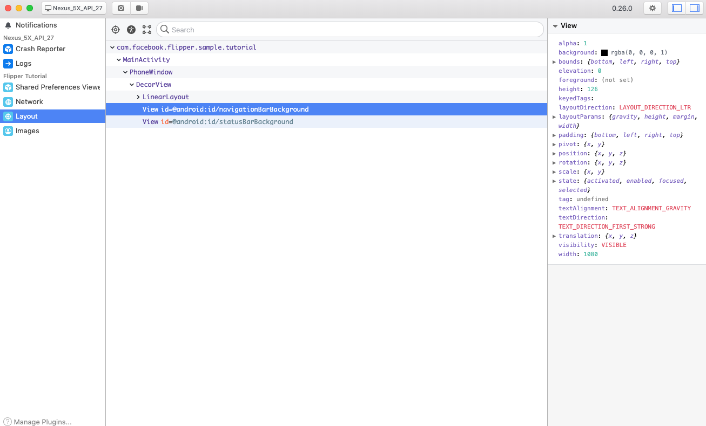
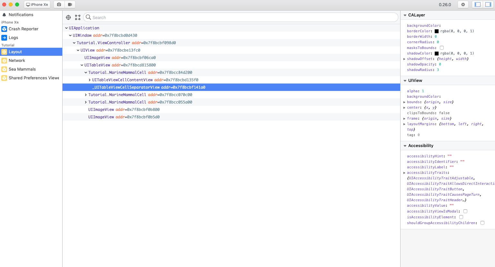

このCodelabではモバイルアプリのデバッグツールFlipperを導入して動かすまでをやっていきます。
iOS, Androidで利用できるFaebook製のモバイルアプリデバッグツールです。
Facebook製なだけあってReact Nativeにも対応しています。
モバイルアプリの開発効率をガンガン上げるデバッグ機能が盛りだくさんで、以下のようなことができます。

類似のツールにStethoがありますが、こちらもFacebook製でFlipperはStathoの後継のような位置づけになっています。また、StethoはAndroidのみ対応していたのに対して、FlipperはiOSでも使えます
このCodelabではサンプルのアプリにFlipperを導入していきます。
以下のリポジトリの「installed」ブランチに出来上がったものを置いています。
Flipperはデスクトップアプリからアプリのデバッグを行うツールです。まずはデスクトップアプリをインストールします。
この後使うサンプルリポジトリをcloneします
git clone git@github.com:k-tomoyasu/flipper-handson.git
Androidのサンプルプロジェクトに移動して作業を進めます。
{project_root}/sample/android
gradleに設定を追記してFlipperライブラリをダウンロード、インストールします。gradleのdependenciesに追記していきます。
app/build.gradle
debugImplementation 'com.facebook.flipper:flipper:0.26.0'
debugImplementation 'com.facebook.soloader:soloader:0.8.0'
debugImplementation 'com.facebook.flipper:flipper-fresco-plugin:0.25.0'
debugImplementation 'com.facebook.flipper:flipper-network-plugin:0.26.0'
releaseImplementation 'com.facebook.flipper:flipper-noop:0.26.0'まずはFlipperに必要な初期化を行います。
TutorialApplication.kt
SoLoader.init(this, false)
val flipperClient = AndroidFlipperClient.getInstance(this)次にプラグインの初期化に必要なパラメータの生成とプラグインの追加をしていきます。
TutorialApplication.kt
val networkFlipperPlugin = NetworkFlipperPlugin()
// NetworkプラグインはOkhttpのInterceptorにセットする
Network.client = OkHttpClient.Builder()
.addInterceptor(FlipperOkhttpInterceptor(networkFlipperPlugin))
.build()
flipperClient.addPlugin(InspectorFlipperPlugin(this, descriptorMapping))
flipperClient.addPlugin(FrescoFlipperPlugin())
flipperClient.addPlugin(SharedPreferencesFlipperPlugin(applicationContext))
flipperClient.addPlugin(networkFlipperPlugin)ここでは以下のプラグインを追加しています。
プラグインなので、運用しながら必要に応じて追加・削除(gradle含め)すると良いです。
最後にデバッグを開始します。
TutorialApplication.kt
flipperClient.start()ここまでで、debugビルドが成功するようになっています。しかし、releaseビルドを実行すると参照の解決に失敗してビルドができません。
これは、releaseビルド用に入れている'flipper-noop'がプラグインに対応していないためです。
app/build.gradle
// flipper-noop. releaseビルド時にFlipperを無効にしてコンパイルを通すためにInterfaceの空実装が用意されている
releaseImplementation 'com.facebook.flipper:flipper-noop:0.26.0'FlipperのIssueを見ると、メンテナンスとコードサイズの観点からプラグインのnoopは用意しない方針のようです。
代替として、アプリ側の実装でdebugとreleaseのソースを分けてFlipperのコードを集約する方法が推奨されています。
ビルドタイプに対応したディレクトリを切り、そこにFlipper関連のコードを集約していきます。サンプルプロジェクトのビルドタイプは「debug」、「release」なので「src/debug」、「src/release」ディレクトリを作成します。
debugの方にTutorialApplicationでやっていたFlipperの初期化・プラグイン追加のコードを移動していきます。
src/debug/FlipperInitializer.kt
interface InitializationResult {
val okHttpClient: OkHttpClient
}
object FlipperInitializer {
fun initFlipper(context: Context): InitializationResult {
SoLoader.init(context, false)
val flipperClient = AndroidFlipperClient.getInstance(context)
val networkFlipperPlugin = NetworkFlipperPlugin()
if (BuildConfig.DEBUG && FlipperUtils.shouldEnableFlipper(context)) {
Network.client = OkHttpClient.Builder()
.addInterceptor(FlipperOkhttpInterceptor(NetworkFlipperPlugin()))
.build()
Preferences.pref = PreferenceManager.getDefaultSharedPreferences(context)
val descriptorMapping = DescriptorMapping.withDefaults()
flipperClient.addPlugin(InspectorFlipperPlugin(context, descriptorMapping))
flipperClient.addPlugin(FrescoFlipperPlugin())
flipperClient.addPlugin(SharedPreferencesFlipperPlugin(context))
flipperClient.addPlugin(networkFlipperPlugin)
flipperClient.start()
}
return object : InitializationResult {
override val okHttpClient: OkHttpClient
get() = OkHttpClient.Builder()
.addInterceptor(FlipperOkhttpInterceptor(networkFlipperPlugin))
.build()
}
}
}
リリースビルド用の方には空実装を用意します。
src/release/FlipperInitializer.kt
interface InitializationResult {
val okHttpClient: OkHttpClient
}
object FlipperInitializer {
fun initFlipper(context: Context): InitializationResult {
return object : InitializationResult {
override val okHttpClient: OkHttpClient
get() = OkHttpClient.Builder()
.build()
}
}
}
TutorialApplication.ktのFlipper関連コードをFlipperInitializerに置き換えます。
src/main/TutorialApplication.kt
class TutorialApplication : Application() {
override fun onCreate() {
super.onCreate()
Fresco.initialize(this)
// Normally, you would want to make these dependent on BuildConfig.DEBUG.
ComponentsConfiguration.isDebugModeEnabled = true
ComponentsConfiguration.enableRenderInfoDebugging = true
val initResult = FlipperInitializer.initFlipper(context = this)
Network.client = initResult.okHttpClient
}
}
これでリリースビルドも成功するようになりました。
サンプルのAndroidアプリをインストール、起動してFlipperアプリを立ち上げると画像のようにアプリのデバッグ情報が表示されます。これで導入完了です。
iOSのサンプルプロジェクトに移動して作業を進めます。
{project_root}/sample/ios/Tutorial
Flipperをcocoapodsでダウンロード、インストールします。pod initし、Podfileを以下のようにします。
Podfile
project ‘Tutorial.xcodeproj'
swift_version = "4.1"
flipperkit_version = ‘0.26.0'
use_frameworks!
target ‘Tutorial' do
platform :ios, ‘9.0'
pod ‘FlipperKit', ‘~>' + flipperkit_version
# Layout and network plugins are not yet supported for swift projects
pod ‘FlipperKit/FlipperKitLayoutComponentKitSupport', ‘~>' + flipperkit_version
pod ‘FlipperKit/SKIOSNetworkPlugin', ‘~>' + flipperkit_version
pod ‘FlipperKit/FlipperKitUserDefaultsPlugin', ‘~>' + flipperkit_version
# If you use `use_frameworks!` in your Podfile,
# uncomment the below $static_framework array and also
# the pre_install section. This will cause Flipper and
# it's dependencies to be static and all other pods to
# be dynamic.
$static_framework = [‘FlipperKit', ‘Flipper', ‘Flipper-Folly',
‘CocoaAsyncSocket', ‘ComponentKit', ‘DoubleConversion',
‘glog', ‘Flipper-PeerTalk', ‘Flipper-RSocket', ‘Yoga', ‘YogaKit',
‘CocoaLibEvent', ‘OpenSSL-Universal', ‘boost-for-react-native']
pre_install do |installer|
Pod::Installer::Xcode::TargetValidator.send(:define_method, :verify_no_static_framework_transitive_dependencies) {}
installer.pod_targets.each do |pod|
if $static_framework.include?(pod.name)
def pod.build_type;
Pod::Target::BuildType.static_library
end
end
end
end
# This post_install hook adds the -DFB_SONARKIT_ENABLED flag to OTHER_SWIFT_FLAGS, necessary to build swift target
post_install do |installer|
file_name = Dir.glob("*.xcodeproj")[0]
app_project = Xcodeproj::Project.open(file_name)
app_project.native_targets.each do |target|
target.build_configurations.each do |config|
if (config.build_settings[‘OTHER_SWIFT_FLAGS'])
unless config.build_settings[‘OTHER_SWIFT_FLAGS'].include? ‘-DFB_SONARKIT_ENABLED'
puts ‘Adding -DFB_SONARKIT_ENABLED ...'
swift_flags = config.build_settings[‘OTHER_SWIFT_FLAGS']
if swift_flags.split.last != ‘-Xcc'
config.build_settings[‘OTHER_SWIFT_FLAGS'] << ' -Xcc'
end
config.build_settings[‘OTHER_SWIFT_FLAGS'] << ' -DFB_SONARKIT_ENABLED'
end
else
puts ‘OTHER_SWIFT_FLAGS does not exist thus assigning it to `$(inherited) -Xcc -DFB_SONARKIT_ENABLED`'
config.build_settings[‘OTHER_SWIFT_FLAGS'] = ‘$(inherited) -Xcc -DFB_SONARKIT_ENABLED'
end
app_project.save
end
end
installer.pods_project.save
end
endpod installが成功すれば完了です。
まずはFlipperKitをimportします。
AppDelegate.swift
import UIKit
import FlipperKit次にクライアントを初期化します。
AppDelegate.swift
let client = FlipperClient.shared()そしてプラグインの初期化に必要なパラメータの生成とプラグインの追加をしていきます。
AppDelegate.swift
let layoutDescriptorMapper = SKDescriptorMapper(defaults: ()) FlipperKitLayoutComponentKitSupport.setUpWith(layoutDescriptorMapper)
client?.add(FlipperKitLayoutPlugin(rootNode: application, with: layoutDescriptorMapper!))
client?.add(FlipperKitNetworkPlugin(networkAdapter: SKIOSNetworkAdapter()))
client?.add(FKUserDefaultsPlugin.init(suiteName: nil))
client?.add(SeaMammalsPlugin(MarineMammal.defaultList))
client?.start()ここでは以下のプラグインを追加しています。
プラグインなので、運用しながら必要に応じて追加・削除(Pods含め)すると良いです。
最後にデバッグを開始します。
AppDelegate.swift
client?.start()iOSサンプルアプリを起動し、Flipperアプリを立ち上げます。上手くいっていれば画像のようにデバッグ情報が表示されます。これで導入完了です。

デバッグ効果の大きさに比して導入コストが軽いので、とてもコスパの良い改善になると思います。
また、FlipperはOSSです。仕組みが気になったり、コントリビュートしたくなったりしたら https://github.com/facebook/flipper へ!